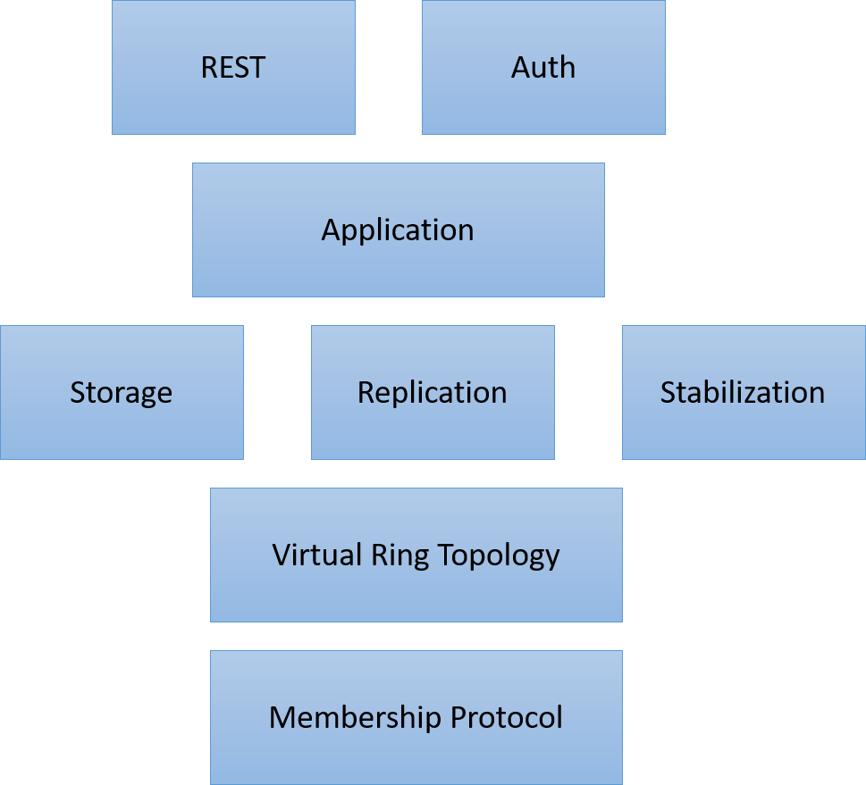
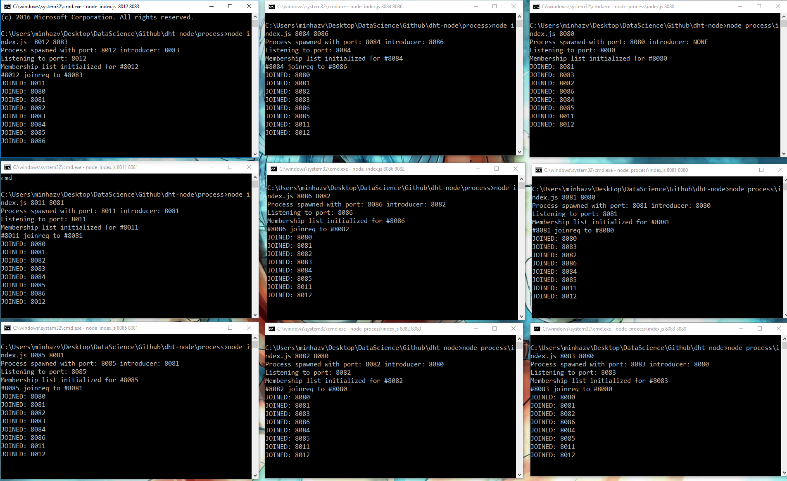
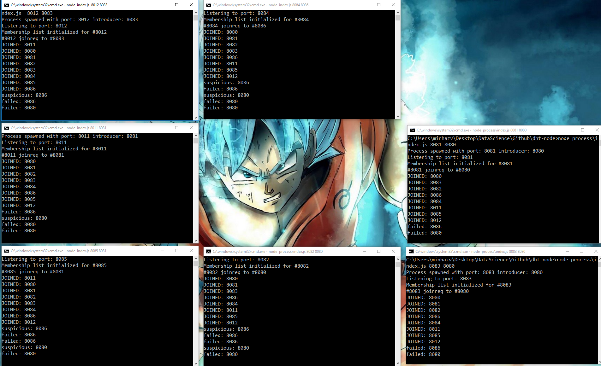

A fault tolerant distributed key value store from scratch
We had a B-Tech course on Distributed Systems and I took a course on on Cloud Computing Concepts 1 by Dr Indranil Gupta (UIUC) a year back and for long, I have been thinking about trying out different concepts explained in the course together as something meaningful. There are assignments in the course which you need to finish, but they don’t require you to just club all of them together. I wished to try something out where most of the major concepts are used.
We use distributed systems a lot in our development pipelines, but most of the concepts are abstracted out by the cloud solutions. I work for Microsoft Azure, and we use concepts like scheduling, queuing, distributed caching all the time, but most of these are provided as a SaaS offering – hence it’s mostly:
Azure.Client.CreateIfNotExists()
Azure.Client.JustDoMostOfItForMe()
Azure.Thanks()Well I’m actually grateful for all the offerings we have in 2017, it makes development much faster and takes a lot of headache away. So I’m picking up this fun exercise to refresh the underlying concepts IN MEMORY :D.
Task: Building a Distributed Key Value Store
A key-value store, or key-value database, is a data storage paradigm designed for storing, retrieving, and managing associative arrays, a data structure more commonly known today as a dictionary or hash. A distributed Key Value store is one where data is replicated across different nodes such that there is:
- High Availability, and
- No single point of failure
Distributed Key Value Store
This will provide simple abstraction for CRUD operation on a key value pair. The operations will be exposed using simple rest calls like
POST http://localhost:8000/ { key: <key>, value: <value> }
GET http://localhost:8001/?key=<key>
DELETE http://localhost:8002/?key=<key>
Plan is to follow a cassandra like architecture where nodes maintain a virtual ring topology and location of key is retrieved based on hash function. Few things I’m gonna follow:
- Consistency type: Strong, Quorum based
- Membership protocol: SWIM
- No authentication or SSL support of as of now – plain old open http
- Local clocks will be used, as they are already in sync with system clock.
- The data will be stored in memory (in context of the process), no commit logs will be maintained; If all process die or some most die before replication data will be lost.
Setup and tests
Pre requisite
- Download nodejs and npm for windows
- Clone this repo: git clone https://github.com/mebjas/dht-node.git
- CD to process dir: cd process – this path contain the code for process
- Install the libraries – npm install
- Run Tests – npm test
- Initialize 24 nodes: cd ..\ && .\init.cmd
- To run just N nodes skip the last step and manually invoke an instance using:
node process\index.js <portno> <introducer>
<portno> – port number or this instance
<introducer> – port number of the introducer to which join request will be sent; Not needed for first instance – it will assume itself to be first instance because of this; I’m not going for any automatic discovery or centralized discovery mechanism here;
Top level architecture

Figure: Architecture
TASK 1.1: Membership Protocol
Implementing SWIM Protocol, where the membership gossips are piggibacked on PING, PING_REQ, JOINREQ, ACK messages. In a given protocol period a node will select a random node and send a ping. If it get’s ACK well and good. It’d stay idle till completion of protocol period.
If it doesn’t get an ACK, it’d send a PING_REQ message to K random nodes, and they will ping the target node. If any of then send an ACK with in the target period the node is conisedered alive else it’s moved to suspicions state; it no one confirms it’s alive in time < 2 * protocol period – it’s removed from the list; Eventually every other node will detect the node’s failure by pinging it first hand or due to piggybacked response;
These screenshots are when 8 nodes were joined and two of them crashed

Figure: Nine nodes detecting other nodes joining in gossip style

Figure: After killing two nodes, other seven nodes detected the failure by failure detection and gossip style messaging
Detecting failures in 24 nodes 😀
Figure: Did the same with 24 Nodes :D; If you look at the console logs, you can see some nodes detected the failure while others got the information as a gossip
TASK 1.2: Testing Membership Protocol
- Simple unit testing using mocha framework for node js. It’s pretty new to me but seems pretty powerful. I have done basic testing will do advanced ones later. Also since the library depends on HTTP calls some mocks / stubs shall be needed.
- To Be Done is end to end testing of membership protocol
- Create nodes
- JOIN nodes
- FAILURES & Failure detection
- Time to detection, accuracy of detection
- Emulation of Congestion / Message Drop scenario
- High load setup
TASK 2: Virtual ring topology
Now that underlying membership protocol works reasonably well and it can both detect failures and diseminate information in Gossip style to other nodes we can build the next layer – the virtual topology. In Cassandra nodes are placed in a virtual ring and the mapping of both keys and nodes position is done using a hash function.
Each node is a member of the ring and their position is calculated based on a hash function. I have picked the most basic one, as simple as this:
hash: function(key) {
return key - 8080;
}
positionInRing = hash(port_no)
Changed hash function to be as simple as key - 8080. It can take values between 8080 & 8336 and give a unique ring id between [0, 256). Thus max ring size if 256 for now;
Some other points
- Ideally, any number of nodes can be created; given their hash shouldn’t collide;
- Max Replication per key was set to 3, can be tested with more;
- Quorum count in this case was set to 2;
Flow:
- For every request (CRUD) the hash of key is computed and it gives an index in range [0, no of nodes). Replication is done from this index to next X nodes in ring (given by MaxReplicationCount). If number of nodes is less than this value all nodes replicate all key value pair;
- Requests are sent to all replicas and once the quorum has replied with +ve response the response is sent to client – CRUD;
- In case of failure to obtain a quorum request is replied with failure;
TASK 3: Storage Replication & Stabilization
Storage of data is abstracted out by datastore.js. Replication is done based on this approach:
3.1 WRITE REQUEST:
Client can send a WRITE REQUEST to any node, with a key-value pair; During the life-cycle of this request, this node will act as a coordinator; The coordinator will calculate the hash of the key and will be able to identify the nodes where this key should be stored. Essentially the hash function will point to one node, let’s call it primary store for the key. In my approach there will be NoOfReplicas = MaxReplicationCount - 1 replicas as well. The NoOfReplicas nodes after the primary store for the key in the ring will be selected as replicas; The coordinator will send the internal write request to each of this node and wait for response; As soon as responses from quorumCount no of nodes come back, the write request will be set as done and success code is returned to client; Otherwise in case of timeout or failed requests > MaxReplicationCount - quorumCount write request will be considered as failed; Here,
- Concepts like hinted hand-off is not implemented as out of scope;
- In case of internal write if some of the nodes actually write the response in their memory, but quorum is not achieved, they should revert back – this is not implemented;
Note: Sending a WRITE REQUEST with a key that already exists will act like Update
3.2 READ REQUEST
Pretty much similar to WRITE Request, the request is sent to replicas and once response is received from at lease quorumCountno of replicas and values are consistent, the value is responded back. In case some the replicas have older values – READ REPAIR is initiated for them by the coordinator; If response is not recieved from quorumCount with value – 404, Not Found is responded back; If less than quorumCount respond with a value, it might be because DELETE failed them or failed writeworked for them. In any case we can either initiate an internal DELETE request to these or leave it be;
3.3 DELETE REQUEST
Similar to above two, initiate request to all replicas and respond back OK if quorum responds with that number;
3.4: Stabilization
Stabilization need to be done every time a new node joins or an existing one leaves the system. In both the cases the structure of the ring changes a little and mapping of the keys to the server changes; (In my implementation! There are better methods like Consistent Hashing where only K/n keys need to be remapped) and every node that detect a failure or the joining of the node kicks in the stabilization protocol; I have gone for most naive implementation where every key in the store is checked for it’s mapping and respective mappings are sent to the replicas. These replicas will store the key value pair if they dont already have it. Once it has received response from each node, the node that detected will remove unwanted keys from it’s store;
TASK 4: Rest API + Final Test
To the client the nodes expose three apis
To the client the nodes expose three apis
/Get a Key
GET /s/key?key=key9 HTTP/1.1
Host: localhost:8083
/Set a key
POST /s/key HTTP/1.1
Host: localhost:8080
Content-Type: application/json
{
"key": "key9",
"value": "value9"
}
/Delete a key
DELETE /s/key?key=key9 HTTP/1.1
Host: localhost:8081
Final test
I’m yet to write automated End to End tests, however I have manually tested the code and it seem to work pretty well; You could Write / Update a key from one node, and read it from other; Since the data is stored in memory – the request response time is pretty fast;
It’s cool to see all nodes detect a new node has joined, and when all consoles are up you can actually see gossip spreading; Then every node kicks in stabilization protocol and all keys can be accessed from this new node;
Similarly, when a node fails, eventually each node detects the failure and kicks stabilization so that data is not lost; However, if all replicas of a set of keys die together – that data is lost;
TODOS:
- Automated E2E testing, unit testing bug fixes Change localhost hard-coding, test it in different machines on a network
- Performance testing – Same Machine / Different Machines
- Add more advanced functionalities, more optimised algorithms,
- Leader Elections, Clock Syncing :O
- Missile launcher and self driving car!
Conclusion
Distributed systems are super awesome; Concepts are pretty cool; It’s fair to use abstractions provided to us by well tested libraries and cloud offerings but I’d totally recommend to try things out from scratch if you have a free weekend; The code for a node is available in .\process directory; I know code design might not be up-to mark – it was a more of a hackathon; I’ll try to find some time to refactor it!
References:
- Coursera Cloud Computing Concepts, Part 1 – https://www.coursera.org/learn/cloud-computing/home/welcome
- Building a Distributed Fault-Tolerant Key-Value Store – http://blog.fourthbit.com/2015/04/12/building-a-distributed-fault-tolerant-key-value-store
- Consistent hashing in Cassandra – https://blog.imaginea.com/consistent-hashing-in-cassandra/